+ SETS +
- Amazon Sets
- Pantheon
- Celestia's Myth
- Vasily's Following
- Red Vex's Embrace
- Assassin Sets
- The Snake Pit
- Witchhunter's Attire
- Creed
- Vizjun's Devices
- Barbarian Sets
- Mount Arreat
- Gathering of the Tribes
- Big Game Hunter
- Spirits of the Nephalem
- Druid Sets
- Lone Wolf's Path
- Caoi Dulra
- Last King of Scosglen
- Rainbow Warrior
- Necromancer Sets
- Satanic Mantra
- Rathma's Empire
- Achilios' Wake
- The Towerlord
- Paladin Sets
- Cinadide's Craft
- Hadriel's Lore
- Malthael's Sanctuary
- Imperius' Edict
- Sorceress Sets
- The Warmage
- Zann Esu's Secrets
- Elemental Children
- Adria's Circle
- The Mysteries
- Uncategorized Sets
- Testament of the Apes
SETS
There are 30 sets in Median XL Zeta, one for each build, and an additional set for Crossbow users.
Sacred Sets Only!
There are no low level sets. All set items are sacred, and therefore cannot be gambled and are harder to
find than regular tier 1-6 items.
Sets in Median XL are advanced equipment for high level heroes and drop only from level 121 monsters.
The following areas are level 121 on Destruction (Hell) difficulty:
· Durance of Hate Level 3 & Mephisto
· Chaos Sanctuary & Diablo
· Throne of Destruction & Baal
· Halls of Vaught
· Dungeon uberquest: Cathedral of Vanity
· Dungeon uberquest: Toraja
· Summoning uberquest: Lord Aldric Jitan
· Summoning uberquest: Legacy of Blood
· Summoning uberquest: Judgement Day
· Summoning uberquest: Inarius' Revenge
· Uberlevel: Kurast 3000 BA
· Uberlevel: Island of the Sunless Sea
· Uberlevel: Khalimgrad
· Uberlevel: Tran Athulua
· Uberlevel: Fauztinville
· Uberlevel: Ghosts of Old Bremmtown
· Uberlevel: Kingdom of Shadow
· Uberlevel: Duncraig
· The Cow Level
· Mausoleum (Astrogha)
· Stony Tomb Level 1 (Quov Tsin)
· Icy Cellar (Belial)
More information about the uberquests can be found in the Uberquests Section
Additionally, bosses in level 118+ areas are also level 121, though the chance of finding a level 121 unique item this way is very low. Cherish the moment when it happens!
Sockets· Durance of Hate Level 3 & Mephisto
· Chaos Sanctuary & Diablo
· Throne of Destruction & Baal
· Halls of Vaught
· Dungeon uberquest: Cathedral of Vanity
· Dungeon uberquest: Toraja
· Summoning uberquest: Lord Aldric Jitan
· Summoning uberquest: Legacy of Blood
· Summoning uberquest: Judgement Day
· Summoning uberquest: Inarius' Revenge
· Uberlevel: Kurast 3000 BA
· Uberlevel: Island of the Sunless Sea
· Uberlevel: Khalimgrad
· Uberlevel: Tran Athulua
· Uberlevel: Fauztinville
· Uberlevel: Ghosts of Old Bremmtown
· Uberlevel: Kingdom of Shadow
· Uberlevel: Duncraig
· The Cow Level
· Mausoleum (Astrogha)
· Stony Tomb Level 1 (Quov Tsin)
· Icy Cellar (Belial)
More information about the uberquests can be found in the Uberquests Section
Additionally, bosses in level 118+ areas are also level 121, though the chance of finding a level 121 unique item this way is very low. Cherish the moment when it happens!
All unique items come with the maximum allowed number of sockets for the item type.
Oskills
If a unique has a skill bonus with no character class requirement (eg. +3-6 to Summon Shadows), then the bonus is an 'oskill', giving this skill to any class for free.
Amazon Sets
| Pantheon | ||
|---|---|---|
|
Amazon Bow Set Pantheon Fire Earth Heaven Water Frost Full Set Bonus: With 2 or more set items: All Resists +50% With 3 or more set items: 50% Increased Attack Speed With 4 or more set items: +4 to Scattershot With Complete Set: 5% Chance to cast level 29 Trinity Nova when you Kill an Enemy 10% Chance to cast level 11 Time Strike on Striking Adds 250-500 damage -75% to Enemy Fire Resistance -75% to Enemy Lightning Resistance -75% to Enemy Cold Resistance -75% to Enemy Poison Resistance +7 to Wolf Stance +200 to Dexterity |
 Fire Reflex Bow (Sacred) Two-Hand Damage: (500-565) to (601-675) (Amazon Only) Required Dexterity: 376 Required Level: 100 10% Chance to cast level 1 Arrow on Striking +(201 to 250)% Enhanced damage 20% Increased Attack Speed Adds 100-150 damage +750 to Maximum Fire Damage +750 to Maximum Lightning Damage +750 to Maximum Cold Damage Socketed: 6 |
Earth Chain Mail (Sacred) Defense: (5448-7164) Durability: 63 Required Strength: 360 Required Level: 100 15% Faster Hit Recovery Adds 50-100 damage (3 to 6)% Life stolen per Hit (16 to 20)% Bonus to Dexterity +(201 to 250)% Enhanced Defense Fire Resist +(31 to 50)% Requirements -33% Socketed: 6 |
|
Heaven Cervelliere (Sacred) Defense: (2025-2481) Durability: 44 (Amazon Only) Required Strength: 345 Required Level: 100 +(201 to 250)% Enhanced Defense (16 to 20)% Bonus to Dexterity +(151 to 200) to Life +(151 to 200) to Mana Lightning Resist +(31 to 50)% Total Character Defense Plus 20% Socketed: 4 Requirements -33% |
Water Leather Gloves (Sacred) Defense: (1014-1197) Durability: 25 Required Strength: 304 Required Level: 100 +(201 to 250)% Enhanced Defense (11 to 15)% Bonus to Strength (11 to 15)% Bonus to Dexterity Poison Resist +(31 to 50)% (11 to 15)% Chance of Uninterruptable Attack (101 to 150)% Extra Gold from Monsters Requirements -33% Socketed: 4 |
 Frost Boots (Sacred) Defense: (1405-1683) Durability: 29 Required Strength: 306 Required Level: 100 30% Faster Hit Recovery (11 to 15)% Bonus to Strength (11 to 15)% Bonus to Dexterity +(201 to 250)% Enhanced Defense Cold Resist +(31 to 50)% (21 to 25)% Better Chance of Getting Magic Items Requirements -33% Socketed: 4 |
| Celestia's Myth | ||
|---|---|---|
|
Amazon Spear Set Celestia's Myth Celestia's Passion Celestia's Wings Celestia's Glory Celestia's Ribbon Celestia's Charge Full Set Bonus: With 2 or more set items: -50% to Enemy Poison Resistance With 3 or more set items: 50% Chance of Crushing Blow With 4 or more set items: 33% Chance to cast level 18 Stormblast on Attack With Complete Set: 15% Chance to cast level 5 Javelin on Striking +150% Bonus Damage to Mark of the Wild Adds 250-500 damage +5000 Defense +10% to All Maximum Resistances All Resists +100% Damage Reduced by 25% |
 Celestia's Passion Maiden Pike (Sacred) Two-Hand Damage: (665-716) to (1047-1124) Durability: 80 (Amazon Only) Required Strength: 350 Required Dexterity: 369 Required Level: 100 Mega Impact 1% Chance to cast level 13 Gift of the Wild on Attack 1% Chance to cast level 4 Sacred Armor on Attack +(251 to 300)% Enhanced damage Adds 300-500 damage Socketed: 6 |
 Celestia's Wings Gothic Plate (Sacred) Defense: (7362-10046) Durability: 99 Required Strength: 614 Required Level: 100 +1 to Amazon Skill Levels Adds 100-150 damage (21 to 25)% Bonus to Strength (21 to 25)% Bonus to Vitality +(251 to 300)% Enhanced Defense +350 Defense +(31 to 50) to Dexterity All Resists +(21 to 25)% Socketed: 6 |
 Celestia's Glory Einherjar Helm (Sacred) Defense: (2464-3020) Durability: 50 (Amazon Only) Required Dexterity: 534 Required Level: 100 +1 to Amazon Skill Levels 25% Increased Attack Speed 25% Faster Hit Recovery +(251 to 300)% Enhanced Defense (21 to 25)% Bonus to Dexterity +(31 to 50) to Strength +(31 to 50) to Vitality Socketed: 4 |
 Celestia's Ribbon Plated Belt (Sacred) Defense: (3429-4280) Durability: 61 Required Strength: 606 Required Level: 100 +1 to Amazon Skill Levels 15% Increased Attack Speed +(251 to 300)% Enhanced Defense (11 to 15)% Bonus to Strength +(31 to 50) to Dexterity Damage Reduced by 5% Socketed: 2 |
Celestia's Charge Light Plated Boots (Sacred) Defense: (1972-2488) Durability: 68 Required Strength: 561 Required Level: 100 2% Chance to cast level 6 Celerity when you Kill an Enemy 40% Faster Run/Walk 20% Faster Hit Recovery +(251 to 300)% Enhanced Defense (11 to 15)% Bonus to Dexterity +(31 to 50) to Strength Total Character Defense Plus (11 to 15)% Socketed: 4 |
| Vasily's Following | ||
|---|---|---|
|
Amazon Javelin Set Vasily's Following Vasily's Falling Star Vasily's Eclipse Vasily's Shepherd Moon Vasily's Crescent Vasily's Moonwalkers Full Set Bonus: With 2 or more set items: Adds 750-1500 cold damage With 3 or more set items: 25% Chance to cast level 18 Shower of Rocks when you Kill an Enemy With 4 or more set items: +4 to Mythal With Complete Set: 15% Chance to cast level 14 Glacial Nova when you Kill an Enemy +6 to Stormlord Enhanced Weapon Damage +250% 40% Bonus to All Attributes All Resists +50% |
Vasily's Falling Star Maiden Javelin (Sacred) Throw Damage: (417-476) to (713-984) One-Hand Damage: (270-308) to (516-760) Durability: 84 (Amazon Only) Required Strength: 175 Required Dexterity: 184 Required Level: 100 +(251 to 300)% Enhanced damage 40% Increased Attack Speed +(201 to 400) to Maximum Damage (21 to 25)% Bonus to Strength (21 to 25)% Bonus to Dexterity 5% Reanimate as: Moon Knight Requirements -50% Socketed: 3 |
Vasily's Eclipse Athulua's Hand (Sacred) Defense: (2666-3339) Durability: 29 (Amazon Only) Required Dexterity: 174 Required Level: 100 40% Faster Block Rate (16 to 20)% Mana stolen per Hit (16 to 20)% Life stolen per Hit (11 to 15)% Chance of Crushing Blow Attacker Flees after Striking (3 to 5)% +(201 to 250)% Enhanced Defense (21 to 25)% Bonus to Strength Socketed: 4 Requirements -50% |
|
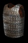 Vasily's Shepherd Moon Splint Mail (Sacred) Defense: (5637-7605) Durability: 75 Required Strength: 563 Required Level: 100 +1 to Amazon Skill Levels 25% Faster Block Rate 15% Chance of Crushing Blow Attacker Flees after Striking (3 to 5)% (11 to 15)% Bonus to Dexterity (11 to 20)% Bonus to Energy +(201 to 250)% Enhanced Defense Socketed: 6 |
 Vasily's Crescent Spangenhelm (Sacred) Defense: (2296-2957) Durability: 62 (Amazon Only) Required Strength: 606 Required Level: 100 10% Chance to cast level 24 Abyss when you Kill an Enemy 15% Faster Hit Recovery +(51 to 100) to Maximum Damage +(31 to 40)% to Cold Spell Damage +(201 to 250)% Enhanced Defense (11 to 15)% Bonus to Dexterity Cold Resist +(41 to 50)% Socketed: 4 |
 Vasily's Moonwalkers Heavy Boots (Sacred) Defense: (1501-1848) Durability: 42 Required Strength: 492 Required Level: 100 40% Faster Run/Walk 20% Faster Block Rate 5% Chance of Crushing Blow +(201 to 250)% Enhanced Defense +(41 to 50) to Strength +(31 to 40) to Dexterity +(201 to 250) to Mana Lightning Resist +(41 to 50)% Socketed: 4 |
| Red Vex' Embrace | ||
|---|---|---|
|
Amazon Blood Set Red Vex' Embrace Red Vex' Flayer Red Vex' Idol Red Vex' Mantle Red Vex' Curse Red Vex' Sin Full Set Bonus: With 2 or more set items: All Resists +30% With 3 or more set items: Increase Maximum Mana 33% With 4 or more set items: +9 to Tremor +150 to Energy With Complete Set: Spells Cost Life instead of Mana +5 Extra Magic Missiles Bolts +12 to Death Coil +400 to Energy All Resists +75% +1000 Life after each Kill |
 Red Vex' Flayer Grand Scepter (Sacred) One-Hand Damage: 80 to 87 Durability: 30 Required Dexterity: 449 Required Level: 100 +(81 to 100) Energy Factor to Spell Damage +(2 to 3) to Amazon Skill Levels 40% Faster Cast Rate +(31 to 40)% to Fire Spell Damage +(31 to 40)% to Physical/Magic Spell Damage +(31 to 40)% Bonus to Summoned Minion Life Fire Resist +(51 to 60)% Socketed: 3 |
 Red Vex' Idol Phoenix Shield (Sacred) Defense: (2808-3671) Durability: 70 (Amazon Only) Required Strength: 324 Required Level: 100 +(1 to 2) to Amazon Skill Levels 30% Faster Cast Rate -(41 to 50)% to Enemy Fire Resistance +(7 to 10) to Elemental Totem +(41 to 50)% Bonus to Summoned Minion Life +(201 to 250)% Enhanced Defense Requirements -50% Socketed: 4 |
 Red Vex' Mantle Breast Plate (Sacred) Defense: (5541-7385) Durability: 69 Required Strength: 275 Required Level: 100 +(1 to 2) to Amazon Skill Levels 25% Faster Cast Rate +(11 to 15)% to Fire Spell Damage +(31 to 40)% to Physical/Magic Spell Damage +(201 to 250)% Enhanced Defense +(21 to 25)% to Experience Gained Socketed: 6 Requirements -50% |
 Red Vex' Curse Morion (Sacred) Defense: (1842-2166) Durability: 32 (Amazon Only) Required Strength: 228 Required Level: 100 25% Faster Hit Recovery 20% Faster Block Rate +(11 to 15)% to Fire Spell Damage +(31 to 40)% Bonus to Summoned Minion Damage +(201 to 250)% Enhanced Defense +(31 to 40) Mana after each Kill Socketed: 4 Requirements -50% |
 Red Vex' Sin Light Belt (Sacred) Defense: (2374-2866) Durability: 34 Required Strength: 245 Required Level: 100 20% Faster Block Rate -(21 to 25)% to Enemy Fire Resistance +(11 to 15)% Bonus to Summoned Minion Life +(11 to 15)% Bonus to Summoned Minion Resistances +(201 to 250)% Enhanced Defense +(21 to 40) Life after each Kill Requirements -50% Socketed: 2 |
Assassin Sets
| The Snake Pit | ||
|---|---|---|
|
Assassin Combat Set The Snake Pit Serpent's Fangs Serpent's Scales Serpent's Tongue Serpent's Coil Serpent's Tail Full Set Bonus: With 2 or more set items: Enhanced Weapon Damage +50% With 3 or more set items: +1 to Assassin Skill Levels With 4 or more set items: All Resists +50% With Complete Set: 20% Chance to cast level 36 Deathstrike on Attack Adds 200-600 damage Slows Target by 50% -50% to Enemy Poison Resistance +18 to Prowl Enhanced Weapon Damage +350% 5% Chance to Avoid Damage |
Serpent's Fangs Naginata (Sacred) Two-Hand Damage: (839-922) to (1202-1300) Durability: 88 (Assassin Only) Required Dexterity: 558 Required Level: 100 Area Effect Attack +(3 to 5) to Assassin Skill Levels +(251 to 300)% Enhanced damage 40% Increased Attack Speed Adds 250-500 damage Stun Attack 5% Chance to Avoid Damage Socketed: 6 |
 Serpent's Scales Light Plate (Sacred) Defense: (5917-8263) Durability: 93 Required Strength: 361 Required Level: 100 +2 to Assassin Skill Levels Adds 50-100 damage -(31 to 50)% to Enemy Poison Resistance +(201 to 250)% Enhanced Defense +(31 to 40) Life on Striking in Melee Poison Length Reduced by 50% Socketed: 6 Requirements -40% |
|
Serpent's Tongue Diadem (Sacred) Defense: (624-705) Durability: 25 Required Dexterity: 524 Required Level: 100 5% Chance to cast level 46 Lorenado on Attack (7 to 9)% Mana stolen per Hit (7 to 9)% Life stolen per Hit 5% Chance of Crushing Blow +(31 to 40) to Strength +(31 to 40) to Dexterity +(31 to 40) to Vitality Socketed: 4 |
 Serpent's Coil Belt (Sacred) Defense: (2561-3160) Durability: 43 Required Strength: 317 Required Level: 100 +1 to Assassin Skill Levels 45% Faster Run/Walk 15% Increased Attack Speed 30% Faster Hit Recovery (11 to 15)% Bonus to Dexterity +(201 to 250)% Enhanced Defense Socketed: 2 Requirements -40% |
 Serpent's Tail Chain Boots (Sacred) Defense: (2045-2459) Durability: 55 Required Strength: 316 Required Level: 100 +1 to Assassin Skill Levels (11 to 15)% Bonus to Dexterity (11 to 15)% Bonus to Vitality +(201 to 250)% Enhanced Defense +450 Defense (11 to 15)% Chance of Uninterruptable Attack Requirements -40% Socketed: 4 |
| Witchhunter's Attire | ||
|---|---|---|
|
Assassin Elemental Set Witchhunter's Attire Witchhunter's Fire Witchhunter's Crucifix Witchhunter's Faith Witchhunter's Hood Witchhunter's Rope Full Set Bonus: With 2 or more set items: +75 to Dexterity With 3 or more set items: All Resists +40% With 4 or more set items: 100% Chance to cast level 24 Crucify on Attack 20% Reanimate as: Onyx Knight With Complete Set: +150 Energy Factor to Spell Damage 8% Chance to cast level 5 Sacrifices on Attack +5 to Assassin Skill Levels -50% to Enemy Fire Resistance -50% to Enemy Poison Resistance 10% Chance to Avoid Damage 10% Reanimate as: Daystar |
 Witchhunter's Fire Scissors Katar (Sacred) One-Hand Damage: (312-356) to (329-376) Durability: 66 (Assassin Only) Required Dexterity: 216 Required Level: 100 +(251 to 300)% Enhanced damage +(31 to 50)% to Fire Spell Damage +(41 to 50)% Bonus to Summoned Minion Life +(31 to 50) to Energy Fire Resist +(41 to 50)% Socketed: 3 Requirements -40% |
Witchhunter's Crucifix Claws (Sacred) One-Hand Damage: (294-336) to (308-352) Durability: 48 (Assassin Only) Required Dexterity: 211 Required Level: 100 +(251 to 300)% Enhanced damage +(31 to 50)% to Poison Spell Damage +(41 to 50)% Bonus to Summoned Minion Damage +(31 to 50) to Energy Poison Resist +(41 to 50)% Socketed: 3 Requirements -40% |
|
Witchhunter's Faith Quilted Armor (Sacred) Defense: (1622-1671) Durability: 27 Required Strength: 230 Required Level: 100 15% Chance to cast level 26 Fire Splash on Attack +2 to Assassin Skill Levels 25% Increased Attack Speed +(41 to 50) to Energy +(41 to 50) to Dexterity Socketed: 6 Requirements -50% |
Witchhunter's Hood Cap (Sacred) Defense: (2136-2583) Durability: 27 Required Strength: 228 Required Level: 100 +(151 to 200)% Enhanced Defense (16 to 20)% Bonus to Strength (16 to 20)% Bonus to Dexterity +5% to All Maximum Resistances All Resists +(31 to 40)% Damage Reduced by 5% Total Character Defense Plus (16 to 20)% Socketed: 4 Requirements -50% |
Witchhunter's Rope Sash (Sacred) Defense: (1822-2208) Durability: 25 Required Strength: 339 Required Level: 100 +1 to Assassin Skill Levels 15% Faster Run/Walk -(21 to 25)% to Enemy Fire Resistance -(21 to 25)% to Enemy Poison Resistance +(151 to 200)% Enhanced Defense 10% Chance of Uninterruptable Attack Socketed: 2 Requirements -25% |
| Creed | ||
|---|---|---|
|
Assassin Throwing Set Creed Tracker's Strike Tracker's Effigy Tracker's Stealth Tracker's Totem Tracker's Runeward Full Set Bonus: With 2 or more set items: 15% Bonus to Dexterity With 3 or more set items: +2 to Assassin Skill Levels With 4 or more set items: +5% to All Maximum Resistances Cannot Be Frozen With Complete Set: 5% Chance to cast level 9 Broadside when you Take Damage 4% Chance to cast level 42 Scorpion Blade on Striking +2 Life on Striking -75% to Enemy Poison Resistance +250 to Strength +250 to Dexterity +250 to Vitality |
 Tracker's Strike Flying Knife (Sacred) Throw Damage: (564-622) to (728-788) One-Hand Damage: (416-454) to (573-612) Durability: 12 Required Dexterity: 473 Required Level: 100 25% Chance to cast level 6 Knife Throw on Striking +(251 to 300)% Enhanced damage 40% Increased Attack Speed Adds 150-300 damage +(41 to 50) to Dexterity Target Takes Additional Damage of 100 Socketed: 2 |
 Tracker's Effigy Aspis (Sacred) Defense: (2829-3839) Durability: 67 (Assassin Only) Required Strength: 497 Required Dexterity: 559 Required Level: 100 +(1 to 2) to Assassin Skill Levels 40% Increased Attack Speed 25% Faster Block Rate Adds 50-75 damage Adds 150-300 fire damage +(201 to 250)% Enhanced Defense All Resists +(21 to 25)% (11 to 15)% Reanimate as: Black Cat Socketed: 4 |
|
Tracker's Stealth Chain Mail (Sacred) Defense: (5448-7164) Durability: 63 Required Strength: 360 Required Level: 100 20% Increased Attack Speed Adds 150-300 magic damage Slows Attacker by 5% +(201 to 250)% Enhanced Defense (11 to 15)% Bonus to Dexterity +(31 to 50) Life after each Kill Requirements -33% Socketed: 6 |
 Tracker's Totem Bone Helm (Sacred) Defense: (2088-2632) Durability: 32 Required Strength: 377 Required Level: 100 20% Faster Block Rate Adds 150-300 cold damage +(201 to 250)% Enhanced Defense +(41 to 50) to Dexterity All Resists +(11 to 15)% Damage Reduced by (31 to 40) Socketed: 4 Requirements -33% |
Tracker's Runeward Belt (Sacred) Defense: (2561-3160) Durability: 43 Required Strength: 354 Required Level: 100 +1 to Assassin Skill Levels 20% Faster Run/Walk Adds 150-300 lightning damage +(201 to 250)% Enhanced Defense +(41 to 50) to Dexterity All Resists +(11 to 15)% Requirements -33% Socketed: 2 |
| Vizjun's Devices | ||
|---|---|---|
|
Assassin Bomb Set Vizjun's Devices Vizjun's Science Vizjun's Monitor Vizjun's Engine Vizjun's Foresight Vizjun's Progress Full Set Bonus: With 2 or more set items: Fire Resist +50% With 3 or more set items: Lightning Resist +50% With 4 or more set items: +3 to Assassin Skill Levels Cold Resist +50% With Complete Set: +3 to Assassin Skill Levels +14 to Typhoon Sentry +250 to Energy +150 to Vitality All Resists +50% +75 Life after each Kill 25% Reanimate as: Magineer |
Vizjun's Science Blade Talons (Sacred) One-Hand Damage: 91 to 98 Durability: 65 (Assassin Only) Required Dexterity: 368 Required Level: 100 +(11 to 20)% Bonus to Energy Factor +(3 to 4) to Assassin Skill Levels 40% Faster Cast Rate 20% Faster Block Rate +(31 to 40)% to Fire Spell Damage -(21 to 30)% to Enemy Lightning Resistance +(31 to 50) to Energy Socketed: 3 |
Vizjun's Monitor Bladed Shield (Sacred) Defense: (1568-2177) Durability: 64 (Assassin Only) Required Dexterity: 550 Required Level: 100 +(51 to 70) Energy Factor to Spell Damage +(2 to 3) to Assassin Skill Levels 1% Increased Chance of Blocking +(41 to 50)% to Lightning Spell Damage -(31 to 40)% to Enemy Cold Resistance +(201 to 250)% Enhanced Defense (21 to 25)% Bonus to Energy Socketed: 6 |
 Vizjun's Engine Hard Leather Armor (Sacred) Defense: (5071-6289) Durability: 39 Required Strength: 291 Required Level: 100 +(1 to 2) to Assassin Skill Levels 25% Faster Run/Walk 30% Faster Cast Rate -(21 to 30)% to Enemy Lightning Resistance +(31 to 40)% to Fire Spell Damage +(201 to 250)% Enhanced Defense Requirements -40% Socketed: 6 |
 Vizjun's Foresight Great Helm (Sacred) Defense: (3064-3892) Durability: 51 Required Strength: 345 Required Level: 100 20% Faster Cast Rate 25% Faster Hit Recovery -(11 to 20)% to Enemy Fire Resistance +(21 to 30)% to Lightning Spell Damage (11 to 15)% Bonus to Energy +(201 to 250)% Enhanced Defense Socketed: 4 Requirements -40% |
Vizjun's Progress Boots (Sacred) Defense: (1405-1683) Durability: 29 Required Strength: 274 Required Level: 100 +(41 to 50) Energy Factor to Spell Damage +1 to Assassin Skill Levels 20% Faster Cast Rate 15% Faster Block Rate -(11 to 15)% to Enemy Lightning Resistance +(21 to 30)% to Fire Spell Damage +(201 to 250)% Enhanced Defense Requirements -40% Socketed: 4 |
Barbarian Sets
| Mount Arreat | ||
|---|---|---|
|
Barbarian Dual Wield Set Mount Arreat Eruption Snowstorm Avalanche Ravine Rockslide Full Set Bonus: With 2 or more set items: +1 to Barbarian Skill Levels With 3 or more set items: Enhanced Weapon Damage +100% With 4 or more set items: 25% Chance to cast level 8 Guard Tower when you Kill an Enemy Poison Resist +50% With Complete Set: 5% Chance to cast level 46 Glacial Nova when you Kill an Enemy 10% Chance to cast level 46 Pyroblast when you Kill an Enemy +4 to Barbarian Skill Levels Area Effect Attack +150% to Fire Spell Damage +150% to Cold Spell Damage +100 to all Attributes Total Character Defense Plus 200% |
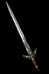 Eruption Kriegsmesser (Sacred) One-Hand Damage: (572-624) to (800-856) Durability: 126 (Barbarian Only) Required Strength: 602 Required Level: 100 10% Chance to cast level 35 Rune of Fire on Attack +2 to Barbarian Skill Levels +(251 to 300)% Enhanced damage Adds 200-400 damage Adds 1500-2500 fire damage Fire Resist +(31 to 50)% Socketed: 6 |
 Snowstorm Ida (Sacred) One-Hand Damage: (551-600) to (772-824) Durability: 108 (Barbarian Only) Required Strength: 552 Required Level: 100 10% Chance to cast level 35 Rune of Ice on Attack +2 to Barbarian Skill Levels +(251 to 300)% Enhanced damage Adds 200-400 damage Adds 1500-2500 cold damage Cold Resist +(31 to 50)% Socketed: 6 |
 Avalanche Ancient Armor (Sacred) Defense: (7234-10208) Durability: 111 Required Strength: 666 Required Level: 100 +(1 to 2) to Barbarian Skill Levels Stun Attack +(251 to 300)% Enhanced Defense +(41 to 50) to Vitality Cold Resist +(31 to 50)% Total Character Defense Plus (11 to 15)% Attacker Takes Cold Damage of 500 Socketed: 6 |
 Ravine Horned Helm (Sacred) Defense: (2881-3540) Durability: 47 (Barbarian Only) Required Strength: 451 Required Level: 100 100% Chance to cast level 32 Pyroclastic Flow when you Die +(2 to 3) to Barbarian Skill Levels Enhanced Weapon Damage +(31 to 50)% +(251 to 300)% Enhanced Defense +(81 to 100) to Strength Lightning Resist +(31 to 50)% Damage Reduced by 5% Socketed: 4 |
 Rockslide Gauntlets (Sacred) Defense: (1404-1872) Durability: 53 Required Strength: 574 Required Level: 100 1% Chance to cast level 33 Tremor on Attack 25% Increased Attack Speed (6 to 10)% Chance of Crushing Blow +(251 to 300)% Enhanced Defense +(41 to 50) to Vitality Total Character Defense Plus (11 to 15)% Socketed: 4 |
| Gathering of the Tribes | ||
|---|---|---|
|
Barbarian Two-Handed Set Gathering of the Tribes The Coming Storm Bear's Warding Wolf's Fang Snake's Battle Chant Crane's Reach Full Set Bonus: With 2 or more set items: +50 to Strength With 3 or more set items: +100 to Vitality With 4 or more set items: +200% Bonus Damage to Bloodlust 250% Bonus to Attack Rating With Complete Set: 20% Chance to cast level 20 Earthquake on Attack Current Strength Damage Bonus: (0.1171875 per strength)% +250 to Strength +4000 Defense 25% Chance to Avoid Damage All Resists +75% 25% Reanimate as: Ulfhedinn |
The Coming Storm Labrys (Sacred) Two-Hand Damage: (765-844) to (989-1072) Durability: 101 (Barbarian Only) Required Strength: 706 Required Level: 100 Thunderfury 25% Chance to cast level 43 Forked Lightning on Attack 2% Chance to cast level 13 Bloodlust on Attack +(251 to 300)% Enhanced damage Adds 200-400 damage +150% Damage to Demons Adds 1-1500 lightning damage Socketed: 6 |
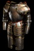 Bear's Warding Full Plate Mail (Sacred) Defense: (6107-8701) Durability: 105 Required Strength: 627 Required Level: 100 +(1 to 2) to Barbarian Skill Levels +(201 to 250)% Enhanced Defense (11 to 15)% Bonus to Strength +(31 to 50) to Energy (11 to 15)% Chance of Uninterruptable Attack Total Character Defense Plus (11 to 15)% Slows Attacker by (11 to 15)% Socketed: 6 |
|
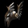 Wolf's Fang Assault Helmet (Sacred) Defense: (2582-3286) Durability: 53 (Barbarian Only) Required Strength: 456 Required Level: 100 (3 to 6)% Life stolen per Hit -15% Penalty to Summoned Minion Life +(201 to 250)% Enhanced Defense (11 to 15)% Bonus to Dexterity +(31 to 50) to Vitality +333 to Life Socketed: 4 |
Snake's Battle Chant Plated Belt (Sacred) Defense: (2940-3745) Durability: 61 Required Strength: 606 Required Level: 100 +(201 to 250)% Enhanced Defense (11 to 15)% Bonus to Energy +(31 to 50) to Strength +333 to Mana +(31 to 40) Life on Striking in Melee +(31 to 40) Mana on Striking in Melee Slows Attacker by 5% Socketed: 2 |
 Crane's Reach Greaves (Sacred) Defense: (1784-2341) Durability: 81 Required Strength: 595 Required Level: 100 -15% Bonus to Summoned Minion Damage +(201 to 250)% Enhanced Defense (11 to 15)% Bonus to Vitality +(31 to 50) to Dexterity All Resists +10% 200% Extra Gold from Monsters Socketed: 4 |
| Big Game Hunter | ||
|---|---|---|
|
Barbarian Throwing Set Big Game Hunter Hunter's Claw Fist Hunter's Camouflage Hunter's Skin Hunter's Trophy Hunter's Trackless Step Full Set Bonus: With 2 or more set items: +250% Damage to Demons With 3 or more set items: +2 to Barbarian Skill Levels With 4 or more set items: Adds 100-200 damage 15% Chance of Crushing Blow With Complete Set: 5% Chance to cast level 42 Disintegrate when you Kill an Enemy +2 to Barbarian Skill Levels Enhanced Weapon Damage +400% +4% to Defense per Socketed Rune 25% Reanimate as: Ulfhedinn |
 Hunter's Claw Fist Balanced Axe (Sacred) Throw Damage: (543-598) to (947-1024) One-Hand Damage: (409-446) to (729-776) Durability: 20 Required Strength: 518 Required Level: 100 5% Chance to cast level 23 Rust Storm when you Kill an Enemy +(251 to 300)% Enhanced damage Adds 150-400 damage (11 to 15)% Chance of Crushing Blow Slows Target by (11 to 15)% +(51 to 75) to Strength Socketed: 6 |
 Hunter's Camouflage Bronze Shield (Sacred) Defense: (4683-6118) Durability: 59 (Barbarian Only) Required Strength: 552 Required Level: 100 1% Increased Chance of Blocking (11 to 13)% Life stolen per Hit +(201 to 250)% Enhanced Defense +500 Defense vs. Melee +(31 to 50) to Strength +(31 to 50) to Vitality 5% Chance to Avoid Damage Socketed: 4 |
 Hunter's Skin Leather Armor (Sacred) Defense: (4975-6069) Durability: 33 Required Strength: 474 Required Level: 100 +(1 to 2) to Barbarian Skill Levels 30% Faster Run/Walk +(201 to 250)% Enhanced Defense +(31 to 50) to Strength +(31 to 50) to Dexterity Cold Resist +(31 to 40)% Magic Damage Reduced by (41 to 50) Socketed: 6 |
 Hunter's Trophy Avenger Guard (Sacred) Defense: (2690-3475) Durability: 59 (Barbarian Only) Required Strength: 461 Required Level: 100 20% Faster Hit Recovery 20% Faster Block Rate +(201 to 250)% Enhanced Defense +(31 to 50) to Strength Fire Resist +(31 to 40)% Poison Resist +(31 to 40)% +(101 to 150) Life after each Kill Socketed: 4 |
Hunter's Trackless Step Heavy Boots (Sacred) Defense: (1501-1848) Durability: 42 Required Strength: 492 Required Level: 100 15% Faster Run/Walk 5% Chance of Crushing Blow +(201 to 250)% Enhanced Defense +(21 to 40) to Vitality +350 Maximum Stamina Lightning Resist +(31 to 40)% Damage Reduced by 5% Socketed: 4 |
| Spirits of the Nephalem | ||
|---|---|---|
|
Barbarian Shaman Set Spirits of the Nephalem Sacred Charge Destiny The Guardian The Protector The Defender Full Set Bonus: With 2 or more set items: 5% Chance to cast level 23 Gift of the Wild when you Kill an Enemy With 3 or more set items: +250% Damage to Protector Spirit Bloodlust With 4 or more set items: Enhanced Weapon Damage +150% +2 to Maximum Barbarian Minions With Complete Set: +32 to Tempest +38 to Rain of Fire +12 to Black Mass +150% Bonus to Summoned Minion Life +250 to Strength +250 to Energy 25% Reanimate as: Edyrem |
Sacred Charge Hammerhead Axe (Sacred) One-Hand Damage: (604-654) to (782-836) Durability: 85 (Barbarian Only) Required Strength: 586 Required Level: 100 +(251 to 300)% Enhanced damage 40% Increased Attack Speed (11 to 15)% Bonus to Energy 60% Faster Block Rate Adds 250-400 damage (11 to 15)% Bonus to Strength (11 to 15)% Bonus to Vitality Socketed: 6 |
 Destiny Gilded Shield (Sacred) Defense: (9297-13132) Durability: 67 (Barbarian Only) Required Strength: 655 Required Level: 100 +3 to Barbarian Skill Levels +(41 to 50)% Bonus to Summoned Minion Life +(11 to 15)% Bonus to Summoned Minion Resistances +2% to Defense per Socketed Rune +(251 to 300)% Enhanced Defense Increase Maximum Mana 25% Regenerate Mana +(31 to 50)% +2 to All Skills when using an Apple Socketed: 4 |
 The Guardian Ring Mail (Sacred) Defense: (6131-7688) Durability: 51 Required Strength: 512 Required Level: 100 +2 to Barbarian Skill Levels +1 to Maximum Barbarian Minions +(31 to 40)% Bonus to Summoned Minion Damage (21 to 25)% Bonus to Strength +(251 to 300)% Enhanced Defense Fire Resist +(41 to 50)% Poison Resist +(41 to 50)% Socketed: 6 |
The Protector Fanged Helm (Sacred) Defense: (2755-3320) Durability: 40 (Barbarian Only) Required Strength: 446 Required Level: 100 +(3 to 4) to Barbarian Skill Levels (31 to 50)% Bonus to Summoned Minion Attack Rating +(41 to 50)% Bonus to Summoned Minion Damage (21 to 25)% Bonus to Vitality +(251 to 300)% Enhanced Defense Cold Resist +(41 to 50)% Total Character Defense Plus (21 to 25)% Socketed: 4 |
 The Defender Heavy Belt (Sacred) Defense: (3208-3948) Durability: 52 Required Strength: 568 Required Level: 100 +(5 to 8) Enhanced Stance Radius 15% Faster Hit Recovery Enhanced Weapon Damage +(31 to 40)% +(21 to 25)% Bonus to Summoned Minion Life (11 to 15)% Bonus to Energy +(251 to 300)% Enhanced Defense Lightning Resist +(41 to 50)% Socketed: 2 |
Druid Sets
| Lone Wolf's Path | ||
|---|---|---|
|
Druid Elemental Set Lone Wolf's Path Lone Wolf's Maul Lone Wolf's Fur Lone Wolf's Gaze Lone Wolf's Claws Lone Wolf's Track Full Set Bonus: With 2 or more set items: +150 Strength Factor to Spell Damage With 3 or more set items: +14 to Firedance With 4 or more set items: +100% to Poison Spell Damage Poison Resist +20% With Complete Set: +6 to Druid Skill Levels 45% Faster Hit Recovery +3 Hunting Banshee/Elemental Missiles -75% to Enemy Fire Resistance -75% to Enemy Cold Resistance +4 to Mana Sweep +19 to Nova Charge +500 to Life |
Lone Wolf's Maul Flamen Staff (Sacred) Two-Hand Damage: 96 to 102 Durability: 77 (Druid Only) Required Strength: 240 Required Level: 100 +(101 to 150) Energy Factor to Spell Damage +(8 to 10) to Druid Skill Levels 50% Faster Cast Rate +(31 to 50)% to Fire Spell Damage +(31 to 50)% to Cold Spell Damage +66 to Energy Damage Reduced by (51 to 60) Socketed: 4 |
Lone Wolf's Fur Gothic Plate (Sacred) Defense: (6013-8484) Durability: 99 Required Strength: 368 Required Level: 100 20% Faster Hit Recovery +(21 to 25)% to Fire Spell Damage +(21 to 25)% to Cold Spell Damage +(201 to 250)% Enhanced Defense Attacker Takes Cold Damage of 150 +(31 to 50) to Strength +(31 to 50) to Vitality Attacker Takes Fire Damage of 150 Socketed: 6 Requirements -40% |
 Lone Wolf's Gaze Spirit Mask (Sacred) Defense: (2251-2936) Durability: 54 (Druid Only) Required Strength: 458 Required Level: 100 +(21 to 40) Energy Factor to Spell Damage 20% Faster Cast Rate -(11 to 20)% to Enemy Fire Resistance -(11 to 20)% to Enemy Cold Resistance +(201 to 250)% Enhanced Defense (11 to 15)% Bonus to Vitality Fire Resist +(31 to 40)% Cold Resist +(31 to 40)% Socketed: 4 |
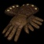 Lone Wolf's Claws Heavy Gloves (Sacred) Defense: (1062-1309) Durability: 32 Required Strength: 387 Required Level: 100 20% Faster Hit Recovery +(11 to 20)% to Fire Spell Damage +(11 to 20)% to Cold Spell Damage (11 to 15)% Bonus to Energy +(201 to 250)% Enhanced Defense Fire Resist +(21 to 25)% Cold Resist +(21 to 25)% Requirements -20% Socketed: 4 |
Lone Wolf's Track Light Plated Boots (Sacred) Defense: (1691-2177) Durability: 68 Required Strength: 448 Required Level: 100 20% Faster Cast Rate -(6 to 10)% to Enemy Fire Resistance -(6 to 10)% to Enemy Cold Resistance +(201 to 250)% Enhanced Defense +(21 to 40) to Vitality Fire Resist +(31 to 50)% Cold Resist +(31 to 50)% Socketed: 4 Requirements -20% |
| Caoi Dulra | ||
|---|---|---|
|
Druid Bow Set Caoi Dulra Nature's Wrath Nature's Will Nature's Vigil Nature's Embrace Nature's Grasp Full Set Bonus: With 2 or more set items: +50 to all Attributes With 3 or more set items: 100% Bonus to Attack Rating With 4 or more set items: +2 to Druid Skill Levels Enhanced Weapon Damage +150% With Complete Set: 33% Chance to cast level 6 Arrow on Striking +7 to Kraken Stance Slows Target by 30% +150 to all Attributes All Resists +40% 25% Reanimate as: Tomb Snake |
 Nature's Wrath Recurve Bow (Sacred) Two-Hand Damage: (547-624) to (1197-1480) (Druid Only) Required Strength: 632 Required Level: 100 +(251 to 300)% Enhanced damage 50% Increased Attack Speed +(601 to 800) to Maximum Damage Adds 1000-2000 fire damage Adds 1000-2000 cold damage +(31 to 50) to Strength Socketed: 6 |
Nature's Will Light Plate (Sacred) Defense: (5917-8263) Durability: 93 Required Strength: 602 Required Level: 100 +1 to Druid Skill Levels 25% Faster Run/Walk 25% Increased Attack Speed 25% Faster Hit Recovery Adds 50-75 damage 5% Chance of Crushing Blow +(201 to 250)% Enhanced Defense Socketed: 6 |
 Nature's Vigil Antlers (Sacred) Defense: (2046-2586) Durability: 42 (Druid Only) Required Strength: 450 Required Level: 100 +(2 to 3) to Druid Skill Levels (11 to 14)% Life stolen per Hit (21 to 25)% Bonus to Strength (21 to 25)% Bonus to Vitality +(201 to 250)% Enhanced Defense Fire Resist +(31 to 50)% Poison Resist +(31 to 50)% Socketed: 4 |
Nature's Embrace Light Belt (Sacred) Defense: (2374-2866) Durability: 34 Required Strength: 490 Required Level: 100 +1 to Druid Skill Levels +(201 to 250)% Enhanced Defense Increase Maximum Life 10% Slows Target by 5% Lightning Resist +(31 to 50)% Cold Resist +(31 to 50)% Socketed: 2 |
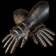 Nature's Grasp Light Gauntlets (Sacred) Defense: (1155-1529) Durability: 46 Required Strength: 380 Required Level: 100 Adds 25-50 damage +(201 to 250)% Enhanced Defense +(31 to 40) to Strength +(31 to 40) to Vitality Slows Target by 5% (21 to 30)% Better Chance of Getting Magic Items Socketed: 4 Requirements -30% |
| Last King of Scosglen | ||
|---|---|---|
|
Druid Treewarden Set Last King of Scosglen Scosglen's Myths Scosglen's Fables Scosglen's Tales Scosglen's History Scosglen's Legends Full Set Bonus: With 2 or more set items: +100 to Strength With 3 or more set items: Enhanced Weapon Damage +250% With 4 or more set items: 50% Increased Attack Speed With Complete Set: 8% Chance to cast level 12 Fortress on Attack 50% Chance to cast level 23 Forked Lightning on Attack Adds 400-600 damage +1000 Defense Increase Maximum Life 20% 15% Chance to Avoid Damage All Resists +50% |
 Scosglen's Myths War Axe (Sacred) One-Hand Damage: (472-518) to (693-748) Durability: 78 Required Strength: 533 Required Level: 100 +(251 to 300)% Enhanced damage 50% Increased Attack Speed Adds 150-300 damage (201 to 250)% Bonus to Attack Rating (21 to 25)% Chance of Crushing Blow Socketed: 6 |
 Scosglen's Fables Plate Mail (Sacred) Defense: (5731-7826) Durability: 81 Required Strength: 576 Required Level: 100 +(31 to 50)% Bonus Damage to Mark of the Wild 50% Faster Hit Recovery Slows Target by 5% +(201 to 250)% Enhanced Defense (21 to 25)% Bonus to Strength All Resists +(11 to 15)% Socketed: 6 |
 Scosglen's Tales Falcon Mask (Sacred) Defense: (2149-2761) Durability: 48 (Druid Only) Required Strength: 454 Required Level: 100 +(21 to 25)% Bonus Elemental Damage to Mark of the Wild 25% Faster Block Rate Adds 50-100 damage (21 to 25)% Bonus to Strength +(201 to 250)% Enhanced Defense Poison Resist +(21 to 25)% Socketed: 4 |
Scosglen's History Sash (Sacred) Defense: (2185-2576) Durability: 25 Required Strength: 452 Required Level: 100 +1 to Druid Skill Levels 50% Faster Run/Walk Adds 25-50 damage +(201 to 250)% Enhanced Defense +(31 to 50) to Strength Replenish Life +200 Socketed: 2 |
Scosglen's Legends Light Gauntlets (Sacred) Defense: (1155-1529) Durability: 46 Required Strength: 544 Required Level: 100 +(21 to 25)% to Fire Spell Damage +(201 to 250)% Enhanced Defense +(31 to 50) to Strength +(31 to 50) to Energy All Resists +(11 to 15)% Poison Length Reduced by 50% Socketed: 4 |
| Rainbow Warrior | ||
|---|---|---|
|
Druid Trap Rat Set Rainbow Warrior Emerald Flower Emerald Earth Emerald Cloud Emerald Sky Emerald Growth Full Set Bonus: With 2 or more set items: +25% Bonus to Summoned Minion Life With 3 or more set items: 15% Chance to cast level 43 Diseased Cattle on Kill +1 to Druid Skill Levels With 4 or more set items: Total Character Defense Plus 50% With Complete Set: Adds 1500-2000 magic damage 25% Chance of Crushing Blow +100 to all Attributes Slows Target by 50% All Resists +50% 50% Chance of Uninterruptable Attack 50% Reanimate as: Ratfink |
 Emerald Flower Blade (Sacred) One-Hand Damage: (430-470) to (491-532) Durability: 26 Required Dexterity: 366 Required Level: 100 +2 to Druid Skill Levels +(31 to 50)% Bonus Damage to Mark of the Wild +(251 to 300)% Enhanced damage 40% Increased Attack Speed Adds 150-200 damage Requirements -25% Socketed: 3 |
Emerald Earth Bone Shield (Sacred) Defense: (2082-2807) Durability: 51 Required Dexterity: 395 Required Level: 100 40% Faster Hit Recovery 1% Increased Chance of Blocking Adds 100-500 fire damage +(201 to 250)% Enhanced Defense +(51 to 75) to Dexterity (21 to 25)% Chance of Uninterruptable Attack Requirements -25% Socketed: 6 |
|
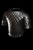 Emerald Cloud Scale Mail (Sacred) Defense: (5351-6947) Durability: 57 Required Strength: 393 Required Level: 100 40% Faster Block Rate Adds 100-500 lightning damage 5% Chance of Crushing Blow +(201 to 250)% Enhanced Defense +(41 to 50) to Strength (21 to 25)% Chance of Uninterruptable Attack Socketed: 6 Requirements -25% |
 Emerald Sky Hawk Helm (Sacred) Defense: (1950-2408) Durability: 37 (Druid Only) Required Strength: 333 Required Level: 100 +2 to Druid Skill Levels 25% Faster Hit Recovery Adds 100-500 cold damage +(201 to 250)% Enhanced Defense +(41 to 50) to Strength Increase Maximum Life 15% Requirements -25% Socketed: 4 |
 Emerald Growth Chain Gloves (Sacred) Defense: (1110-1417) Durability: 39 Required Strength: 385 Required Level: 100 +1 to Druid Skill Levels 20% Faster Run/Walk (4 to 6)% Life stolen per Hit +(201 to 250)% Enhanced Defense +(21 to 25) to Dexterity +(21 to 25) to Vitality Requirements -25% Socketed: 4 |
Necromancer Sets
| Satanic Mantra | ||
|---|---|---|
|
Necromancer Summoner Set Satanic Mantra Archangel Dark Angel Lend Me Thy Light Through Death's Veil Till We Have Heaven In Sight Full Set Bonus: With 2 or more set items: +50 to Strength +50 to Dexterity With 3 or more set items: +9 to Snake Stance With 4 or more set items: +10 Enhanced Stance Radius +2 to Summon Overlord With Complete Set: 25% Lamia Reanimate Targets as: Rathma Priest +17 to Dark Power +2 to Necromancer Skill Levels +10 to Maximum Necromancer Minions +100% Bonus to Summoned Minion Damage +150% Bonus to Summoned Minion Life +50% Bonus to Summoned Minion Resistances |
 Archangel Dark Angel Marrow Staff (Sacred) Two-Hand Damage: 90 to 98 Durability: 106 (Necromancer Only) Required Strength: 275 Required Level: 100 +(8 to 10) to Necromancer Skill Levels 50% Faster Cast Rate +(11 to 15)% Bonus to Summoned Minion Resistances +(21 to 40)% Bonus to Summoned Minion Damage +(10 per level) Defense (Based on Character Level) All Resists +(31 to 40)% Socketed: 6 |
Lend Me Thy Light Scale Mail (Sacred) Defense: (5351-6947) Durability: 57 Required Strength: 525 Required Level: 100 +(1 to 2) to Necromancer Skill Levels +2 to Maximum Necromancer Minions +(201 to 250)% Enhanced Defense +(81 to 100) to Strength +(81 to 100) to Energy +(31 to 50) to Dexterity +(31 to 50) to Vitality +500 to Mana +2 to Light Radius Socketed: 6 |
 Through Death's Veil Crown (Sacred) Defense: (3190-4109) Durability: 57 Required Strength: (206-181) Required Level: 100 +(1 to 2) to Necromancer Skill Levels +(201 to 250)% Enhanced Defense +40 to Strength +40 to Energy Increase Maximum Mana 25% (101 to 200)% Extra Gold from Monsters Requirements (-66 to -70)% Socketed: 4 |
Till We Have Light Belt (Sacred) Defense: (2374-2866) Durability: 34 Required Strength: 490 Required Level: 100 10% Faster Cast Rate +(11 to 20)% Bonus to Summoned Minion Life +(201 to 250)% Enhanced Defense +25 to Strength +25 to Energy All Resists +(21 to 25)% (21 to 25)% Better Chance of Getting Magic Items Socketed: 2 |
Heaven In Sight Light Plated Boots (Sacred) Defense: (1691-2177) Durability: 68 Required Strength: 336 Required Level: 100 25% Faster Run/Walk 10% Faster Cast Rate +(11 to 20)% Bonus to Summoned Minion Damage +(201 to 250)% Enhanced Defense 5% Bonus to All Attributes +25 to Strength +25 to Energy Requirements -40% Socketed: 4 |
| Rathma's Empire | ||
|---|---|---|
|
Necromancer Melee Set Rathma's Empire Rathma's Tyranny Rathma's Skeleton Rathma's Death Gaze Rathma's Trap Rathma's Chase Full Set Bonus: With 2 or more set items: 20% Life stolen per Hit With 3 or more set items: 25% Chance of Crushing Blow With 4 or more set items: Increase Maximum Life 20% With Complete Set: 100% Chance to cast level 19 Crucify on Attack +150 to all Attributes All Resists +65% Total Character Defense Plus 150% |
 Rathma's Tyranny Bonesplitter (Sacred) Two-Hand Damage: (671-730) to (936-1018) Durability: 96 (Necromancer Only) Required Strength: 512 Required Level: 100 Mega Impact 50% Chance to cast level 9 Guard Tower when you Kill an Enemy +(251 to 300)% Enhanced damage 40% Increased Attack Speed Adds 250-350 damage Slows Target by (21 to 25)% +(51 to 70) to Strength Socketed: 6 |
Rathma's Skeleton Ancient Armor (Sacred) Defense: (6203-8932) Durability: 111 Required Strength: 532 Required Level: 100 +(1 to 2) to Necromancer Skill Levels 20% Faster Run/Walk 40% Faster Hit Recovery +(201 to 250)% Enhanced Defense Lightning Resist +(31 to 50)% Damage Reduced by 5% Socketed: 6 Requirements -20% |
|
Rathma's Death Gaze Cap (Sacred) Defense: (1351-1361) Durability: 27 Required Strength: 456 Required Level: 100 +(1 to 2) to Necromancer Skill Levels 20% Faster Hit Recovery +(31 to 50) to Maximum Damage +500 Defense +(31 to 50) to Strength All Resists +(11 to 15)% Socketed: 4 |
Rathma's Trap Heavy Belt (Sacred) Defense: (2751-3454) Durability: 52 Required Strength: 568 Required Level: 100 (3 to 5)% Mana stolen per Hit (3 to 5)% Life stolen per Hit +(201 to 250)% Enhanced Defense +(21 to 25) to all Attributes Slows Target by 5% Fire Resist +(31 to 50)% 150% Damage Reflected Socketed: 2 |
Rathma's Chase Chain Boots (Sacred) Defense: (1595-2009) Durability: 55 Required Strength: 527 Required Level: 100 30% Faster Run/Walk 5% Chance of Crushing Blow +(201 to 250)% Enhanced Defense +(151 to 200) Maximum Stamina Cold Resist +(31 to 50)% Total Character Defense Plus (11 to 15)% Level 1 Blink (10 Charges) Socketed: 4 |
| Achilios' Wake | ||
|---|---|---|
|
Necromancer Crossbow Set Achilios' Wake Achilios' Sledgehammer Achilios' Refuge Achilios' Eagle Eye Achilios' Knuckledusters Achilios' Stealth Full Set Bonus: With 2 or more set items: +50 to Maximum Damage +20 to Strength With 3 or more set items: +2 to Necromancer Skill Levels All Resists +25% With 4 or more set items: Adds 1417-1468 poison damage over 5 seconds +100 to Strength With Complete Set: 40% Chance to cast level 6 Spike Nova when you Kill an Enemy 50% Increased Attack Speed +200 to Maximum Damage -50% to Enemy Poison Resistance 20% Chance of Crushing Blow All Resists +45% 2% Reanimate as: Corruptor Archer |
Achilios' Sledgehammer Needle Crossbow (Sacred) Two-Hand Damage: (677-744) to (884-952) (Necromancer Only) Required Strength: 244 Required Level: 100 +(251 to 300)% Enhanced damage Adds 200-400 damage (11 to 15)% Chance of Crushing Blow +12 to Nova Shot Slows Target by (21 to 25)% (21 to 25)% Bonus to Strength +10 Life on Striking Socketed: 6 |
 Achilios' Refuge Studded Leather (Sacred) Defense: (5162-6506) Durability: 45 Required Strength: 499 Required Level: 100 +(1 to 2) to Necromancer Skill Levels 20% Faster Run/Walk (51 to 100)% Bonus to Attack Rating +(201 to 250)% Enhanced Defense +(31 to 50) to Strength +(31 to 50) to Dexterity +(21 to 30)% Damage when using an Apple Socketed: 6 |
|
Achilios' Eagle Eye Helm (Sacred) Defense: (2814-3451) Durability: 39 Required Strength: 412 Required Level: 100 20% Increased Attack Speed 10% Faster Hit Recovery +(201 to 250)% Enhanced Defense Replenish Life +(21 to 40) Damage Reduced by (11 to 20) 10% Reanimate as: Familiar Socketed: 4 Requirements -20% |
Achilios' Knuckledusters Leather Gloves (Sacred) Defense: (1014-1197) Durability: 25 Required Strength: 340 Required Level: 100 +1 to Necromancer Skill Levels +(41 to 50) to Maximum Damage 5% Chance of Crushing Blow +(201 to 250)% Enhanced Defense +(31 to 40) to Strength 10% Reanimate as: Banshee Requirements -25% Socketed: 4 |
Achilios' Stealth Heavy Boots (Sacred) Defense: (1501-1848) Durability: 42 Required Strength: 393 Required Level: 100 20% Faster Run/Walk +(41 to 50) to Maximum Damage Attacker Flees after Striking 5% +(201 to 250)% Enhanced Defense +(31 to 40) to Strength (11 to 15)% Bonus to Vitality when using an Apple Requirements -20% Socketed: 4 |
| The Towerlord | ||
|---|---|---|
|
Necromancer Totemic Set The Towerlord Tower Rush Tower Defense Tower Wall Tower Denial Tower Push Full Set Bonus: With 2 or more set items: +50 to Strength With 3 or more set items: +50 to Dexterity With 4 or more set items: +100% to Spell Damage +27 to Totembound Guardian With Complete Set: +1 Extra Totems +33 to Fear Bomb Totem +33 to Devil's Fang Totem +33 to Exploding Totem +50% Bonus to Summoned Minion Life +1000 to Life +10% to All Maximum Resistances |
 Tower Rush Bone Wand (Sacred) One-Hand Damage: 74 to 80 Durability: 60 (Necromancer Only) Required Dexterity: 170 Required Level: 100 +1 Extra Totems +2 to Necromancer Skill Levels +(31 to 40)% to Fire Spell Damage +(31 to 40)% to Lightning Spell Damage +(31 to 40)% to Cold Spell Damage Socketed: 2 |
 Tower Defense Demon Head (Sacred) Defense: (3124-4431) Durability: 70 (Necromancer Only) Required Dexterity: 222 Required Level: 100 -(21 to 25)% to Enemy Fire Resistance -(21 to 25)% to Enemy Lightning Resistance -(21 to 25)% to Enemy Cold Resistance (21 to 25)% Bonus to Dexterity +(201 to 250)% Enhanced Defense Requirements -50% Socketed: 4 |
|
Tower Wall Splint Mail (Sacred) Defense: (5637-7605) Durability: 75 Required Strength: 422 Required Level: 100 +2 to Necromancer Skill Levels +(21 to 25)% to Fire Spell Damage +(201 to 250)% Enhanced Defense (11 to 15)% Bonus to Strength All Resists +(11 to 15)% Socketed: 6 Requirements -25% |
 Tower Denial Mask (Sacred) Defense: (2028-2520) Durability: 26 Required Strength: 540 Required Level: 100 +1 to Necromancer Skill Levels 20% Faster Cast Rate +(21 to 25)% to Lightning Spell Damage +(201 to 250)% Enhanced Defense +(31 to 40) to Dexterity Socketed: 4 |
Tower Push Chain Gloves (Sacred) Defense: (369-405) Durability: 39 Required Strength: 514 Required Level: 100 15% Faster Run/Walk 20% Faster Cast Rate +(21 to 25)% to Cold Spell Damage (21 to 25)% Bonus to Strength +(31 to 40) to Energy Regenerate Mana +(11 to 15)% Socketed: 4 |
Paladin Sets
| Cinadide's Craft | ||
|---|---|---|
|
Paladin Holy Melee Set Cinadide's Craft Cinadide's Malus Cinadide's Forge Cinadide's Bellows Cinadide's Anvil Cinadide's Bender Full Set Bonus: With 2 or more set items: Cannot Be Frozen Only Allows the Use of Melee, Summoning and Buff Skills With 3 or more set items: All Resists +50% With 4 or more set items: 50% Increased Attack Speed +24 to Golden Calf With Complete Set: -100% to Enemy Poison Resistance 66% Chance of Crushing Blow Enhanced Weapon Damage +400% Slows Target by 50% Total Character Defense Plus 100% +350 to all Attributes All Resists +100% |
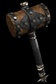 Cinadide's Malus Hand of God (Sacred) Two-Hand Damage: (840-916) to (1068-1148) Durability: 151 (Paladin Only) Required Strength: 496 Required Level: 100 Amazing Grace +(251 to 300)% Enhanced damage 40% Increased Attack Speed Adds 300-500 damage Stun Attack (21 to 25)% Chance of Crushing Blow All Resists +(31 to 40)% Socketed: 6 |
Cinadide's Forge Ancient Armor (Sacred) Defense: (7234-10208) Durability: 111 Required Strength: 499 Required Level: 100 15% Chance to cast level 20 Flamestrike on Attack +(1 to 2) to Paladin Skill Levels +100 to Maximum Damage (11 to 15)% Chance of Crushing Blow Slows Attacker by 5% +(251 to 300)% Enhanced Defense Total Character Defense Plus (31 to 40)% Socketed: 6 Requirements -25% |
 Cinadide's Bellows Hundsgugel (Sacred) Defense: (2790-3520) Durability: 24 (Paladin Only) Required Strength: 363 Required Level: 100 10% Chance to cast level 44 Immolation Bomb on Attack 40% Increased Attack Speed 20% Faster Hit Recovery Adds 100-200 damage Enhanced Weapon Damage +(31 to 50)% +(251 to 300)% Enhanced Defense +(41 to 60) to Strength Socketed: 4 |
Cinadide's Anvil Plated Belt (Sacred) Defense: (3429-4280) Durability: 61 Required Strength: 303 Required Level: 100 +1 to Paladin Skill Levels Adds 50-100 damage Adds 250-500 magic damage +(251 to 300)% Enhanced Defense (21 to 25)% Bonus to Strength (11 to 15)% Chance of Uninterruptable Attack Socketed: 2 Requirements -50% |
Cinadide's Bender Gauntlets (Sacred) Defense: (1404-1872) Durability: 53 Required Strength: 574 Required Level: 100 5% Chance to cast level 34 Lava Pit on Attack 20% Increased Attack Speed 40% Faster Hit Recovery Adds 250-500 magic damage +(251 to 300)% Enhanced Defense +(31 to 50) to Strength (31 to 50)% Better Chance of Getting Magic Items Socketed: 4 |
| Hadriel's Lore | ||
|---|---|---|
|
Paladin Holy Caster Set Hadriel's Lore Hadriel's Avenger Hadriel's Pure Heart Hadriel's Wings Hadriel's Courage Hadriel's Presence Full Set Bonus: With 2 or more set items: 150% Extra Gold from Monsters With 3 or more set items: +2 to Paladin Skill Levels With 4 or more set items: +75 Energy Factor to Spell Damage +8 to Mythal With Complete Set: +2 to Paladin Skill Levels +50% to Searing Glow Dazzle Duration +100% to Fire Spell Damage +100% to Physical/Magic Spell Damage +200 to Energy +200 to Vitality Total Character Defense Plus 66% |
 Hadriel's Avenger Goedendag (Sacred) One-Hand Damage: 97 to 98 Durability: 53 (Paladin Only) Required Strength: 287 Required Level: 100 +(2 to 4) to Paladin Skill Levels 20% Faster Cast Rate +(31 to 50)% to Fire Spell Damage +(31 to 50)% to Physical/Magic Spell Damage +(31 to 50) Mana after each Kill +(31 to 50) Life after each Kill Requirements -50% Socketed: 3 |
Hadriel's Pure Heart Crown Shield (Sacred) Defense: (4051-5670) Durability: 77 (Paladin Only) Required Dexterity: 357 Required Level: 100 +(2 to 3) to Paladin Skill Levels 20% Faster Cast Rate 20% Faster Block Rate Slows Attacker by (11 to 15)% +(31 to 40)% to Physical/Magic Spell Damage +(201 to 250)% Enhanced Defense +(31 to 50) to Strength Socketed: 4 Requirements -20% |
|
Hadriel's Wings Ring Mail (Sacred) Defense: (5258-6727) Durability: 51 Required Strength: 409 Required Level: 100 +(31 to 50) Energy Factor to Spell Damage +(1 to 2) to Paladin Skill Levels 40% Faster Run/Walk 30% Faster Cast Rate +(21 to 40)% to Fire Spell Damage +(201 to 250)% Enhanced Defense Socketed: 6 Requirements -20% |
 Hadriel's Courage Skull Cap (Sacred) Defense: (2687-3234) Durability: 33 Required Strength: 364 Required Level: 100 +(201 to 250)% Enhanced Defense (11 to 15)% Bonus to Energy All Resists +(21 to 30)% Damage Reduced by (11 to 15) (11 to 15)% Curse Length Reduction Socketed: 4 Requirements -25% |
Hadriel's Presence Greaves (Sacred) Defense: (1784-2341) Durability: 81 Required Strength: 327 Required Level: 100 10% Faster Block Rate +(11 to 15)% to Fire Spell Damage +(11 to 15)% to Physical/Magic Spell Damage +(201 to 250)% Enhanced Defense All Resists +(21 to 25)% Requirements -45% Socketed: 4 |
| Malthael's Sanctuary | ||
|---|---|---|
|
Paladin Unholy Melee Set Malthael's Sanctuary Malthael's Wrath Malthael's Halo Malthael's Crown Malthael's Ward Malthael's Stride Full Set Bonus: With 2 or more set items: 15% Chance to cast level 29 Flamestrike on Attack With 3 or more set items: +150 Life on Striking in Melee With 4 or more set items: 15% Chance to cast level 29 Hailstorm on Attack With Complete Set: +100% to Fire Spell Damage +100% to Cold Spell Damage -50% to Enemy Fire Resistance -50% to Enemy Cold Resistance +12 to Warp Armor Increase Maximum Life and Mana 33% All Resists +50% |
 Malthael's Wrath Holy Lance (Sacred) Two-Hand Damage: 98 to 169 Durability: 52 (Paladin Only) Required Strength: 514 Required Level: 100 Amazing Grace +(3 to 5) to Paladin Skill Levels 75% Increased Attack Speed Slows Ranged Attacker by (11 to 15)% +(31 to 40)% to Fire Spell Damage +(31 to 40)% to Cold Spell Damage +20% to Poison Spell Damage (11 to 15)% Chance of Crushing Blow Socketed: 6 |
 Malthael's Halo Field Plate (Sacred) Defense: (6791-9192) Durability: 87 Required Strength: 353 Required Level: 100 +(2 to 3) to Paladin Skill Levels +(21 to 25)% to Fire Spell Damage +(21 to 25)% to Cold Spell Damage +(251 to 300)% Enhanced Defense Fire Resist +(31 to 50)% Cold Resist +(31 to 50)% Requirements -40% Socketed: 6 |
 Malthael's Crown Blackguard Helm (Sacred) Defense: (2460-2956) Durability: 29 (Paladin Only) Required Dexterity: 387 Required Level: 100 +(1 to 3) to Paladin Skill Levels (201 to 250)% Bonus to Attack Rating -(11 to 15)% to Enemy Fire Resistance -(11 to 15)% to Enemy Cold Resistance (16 to 20)% Bonus to Strength (16 to 20)% Bonus to Energy +(251 to 300)% Enhanced Defense +(21 to 40) Life on Striking in Melee Socketed: 4 |
Malthael's Ward Sash (Sacred) Defense: (726-736) Durability: 25 Required Strength: 361 Required Level: 100 +1 to Paladin Skill Levels +(21 to 25)% to Cold Spell Damage +(21 to 25)% Bonus to Summoned Minion Damage +(21 to 40) to Strength Doubled Terror Strike Duration (3 to 5)% Chance of Uninterruptable Attack Total Character Defense Plus (11 to 20)% Socketed: 2 Requirements -20% |
Malthael's Stride Chain Boots (Sacred) Defense: (1860-2296) Durability: 55 Required Strength: 527 Required Level: 100 5% Chance to cast level 14 Carpet of Spiders on Attack +1 to Paladin Skill Levels 30% Faster Run/Walk 10% Increased Attack Speed +(21 to 25)% to Fire Spell Damage +(11 to 20)% Bonus to Summoned Minion Life +(251 to 300)% Enhanced Defense Socketed: 4 |
| Imperius' Edict | ||
|---|---|---|
|
Paladin Unholy Caster Set Imperius' Edict Imperius' Sky Hammer Imperius' Radiance Imperius' Aura Imperius' Crusade Imperius' Winged Feet Full Set Bonus: With 2 or more set items: 15% Bonus to Strength 15% Bonus to Energy With 3 or more set items: 15% Bonus to Dexterity 15% Bonus to Energy With 4 or more set items: 15% Bonus to Energy 15% Bonus to Vitality With Complete Set: +100 Energy Factor to Spell Damage -50% to Enemy Lightning Resistance -50% to Enemy Poison Resistance Attacker Flees after Striking 33% +150 to all Attributes 20% Chance to Avoid Damage 1% Reanimate as: Imperius |
 Imperius' Sky Hammer War Scepter (Sacred) One-Hand Damage: 86 to 98 Durability: 46 Required Dexterity: 247 Required Level: 100 +(41 to 50) Energy Factor to Spell Damage +(3 to 5) to Paladin Skill Levels +(31 to 40)% to Lightning Spell Damage +(31 to 40)% to Poison Spell Damage +(31 to 40)% to Physical/Magic Spell Damage 5% Reanimate as: Night Clan Socketed: 6 Requirements -50% |
 Imperius' Radiance Targe (Sacred) Defense: (1145-1218) Durability: 40 (Paladin Only) Required Dexterity: 262 Required Level: 100 30% Faster Cast Rate 15% Faster Block Rate 1% Increased Chance of Blocking +(21 to 30)% to Lightning Spell Damage +(21 to 30)% to Poison Spell Damage (16 to 20)% Bonus to All Attributes Requirements -40% Socketed: 4 |
|
Imperius' Aura Breast Plate (Sacred) Defense: (1841-2110) Durability: 69 Required Strength: 330 Required Level: 100 +(1 to 2) to Paladin Skill Levels 25% Faster Cast Rate +(21 to 25)% to Lightning Spell Damage +(21 to 25)% to Poison Spell Damage Fire Resist +(31 to 50)% Lightning Resist +(52 to 80)% Cold Resist +(31 to 50)% Poison Resist +(31 to 50)% Socketed: 6 Requirements -40% |
 Imperius' Crusade Coronet (Sacred) Defense: (834-890) Durability: 15 Required Dexterity: 327 Required Level: 100 +(1 to 2) to Paladin Skill Levels (11 to 15)% Bonus to Strength (11 to 15)% Bonus to Energy +400 Defense Fire Resist +(21 to 30)% Cold Resist +(21 to 30)% +2 to Light Radius Socketed: 4 |
Imperius' Winged Feet Boots (Sacred) Defense: (467-481) Durability: 29 Required Strength: 274 Required Level: 100 +(21 to 25) Energy Factor to Spell Damage +1 to Paladin Skill Levels 40% Faster Run/Walk 20% Faster Cast Rate +5% to All Maximum Resistances +250 Maximum Stamina Requirements -40% Socketed: 4 |
Sorceress Sets
| The Warmage | ||
|---|---|---|
|
Sorceress Fire Set The Warmage Warmage's Fireblade Warmage's Flameshroud Warmage's Breath Warmage's Conjuration Warmage's Wake Full Set Bonus: With 2 or more set items: +50 to Strength With 3 or more set items: All Resists +75% With 4 or more set items: +4 to Banish +24 to Fire Cascade With Complete Set: 2% Chance to cast level 40 Lifeblood when Struck +2 to Sorceress Skill Levels 50% Faster Run/Walk +50% to Spell Damage +30 to Summon Jinn 25% Bonus to Energy 5% Chance to Avoid Damage |
Warmage's Fireblade Battle Staff (Sacred) Two-Hand Damage: 121 to 131 Durability: 94 Required Dexterity: 187 Required Level: 100 +(8 to 10) to Sorceress Skill Levels -(31 to 40)% to Enemy Fire Resistance +(51 to 60)% to Fire Spell Damage +150 to Energy 5% Chance to Avoid Damage (11 to 15)% Reanimate as: Fire Drake Socketed: 4 Requirements -20% |
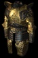 Warmage's Flameshroud Banded Plate (Sacred) Defense: (6591-9390) Durability: 110 (Sorceress Only) Required Dexterity: 501 Required Level: 100 +2 to Pagan Rites +(201 to 250)% Enhanced Defense +100 to Strength +500 to Life Fire Absorb (11 to 15)% Damage Reduced by 10% Socketed: 6 Requirements -20% |
 Warmage's Breath Full Helm (Sacred) Defense: (2937-3671) Durability: 45 Required Strength: 327 Required Level: 100 +2 to Sorceress Skill Levels 40% Faster Cast Rate Slows Attacker by 5% -(21 to 25)% to Enemy Fire Resistance +(201 to 250)% Enhanced Defense +100 to Energy Socketed: 4 Requirements -40% |
Warmage's Conjuration Heavy Gloves (Sacred) Defense: (1062-1309) Durability: 32 Required Strength: 290 Required Level: 100 +(31 to 40) Energy Factor to Spell Damage +1 to Sorceress Skill Levels 20% Faster Cast Rate +(31 to 40)% to Fire Spell Damage +(201 to 250)% Enhanced Defense +50 to Dexterity Requirements -40% Socketed: 4 |
Warmage's Wake Greaves (Sacred) Defense: (1784-2341) Durability: 81 Required Strength: 357 Required Level: 100 +1 to Sorceress Skill Levels 40% Faster Run/Walk +(31 to 40)% to Fire Spell Damage +(201 to 250)% Enhanced Defense +50 to Energy +50 to Dexterity Requirements -40% Socketed: 4 |
| Zann Esu's Secrets | ||
|---|---|---|
|
Sorceress Cold Set Zann Esu's Secrets Zann Esu's Charm Zann Esu's Binding Circle Zann Esu's Robes Zann Esu's Mysteries Zann Esu's Rune Loop Full Set Bonus: With 2 or more set items: +50 to Dexterity With 3 or more set items: Total Character Defense Plus 40% With 4 or more set items: +8 to Raven Heart +50% Bonus to Summoned Minion Life With Complete Set: +38 to Ice Bolt Nova +36 to Frozen Crown +100% Bonus to Summoned Minion Life +50% Bonus to Summoned Minion Damage +100 Life after each Kill All Resists +50% Damage Reduced by 25% |
Zann Esu's Charm Jared's Stone (Sacred) One-Hand Damage: 80 to 86 Durability: 78 (Sorceress Only) Required Dexterity: 194 Required Level: 100 +(3 to 4) to Sorceress Skill Levels 30% Faster Cast Rate -(31 to 40)% to Enemy Cold Resistance +(41 to 60)% Bonus to Summoned Minion Life +(31 to 40) to Strength +315 to Mana +5% to Maximum Cold Resist Socketed: 3 |
 Zann Esu's Binding Circle Small Shield (Sacred) Defense: (3557-4455) Durability: 42 Required Strength: 231 Required Dexterity: 249 Required Level: 100 5% Chance to cast level 12 Rune of Ice when Struck +(1 to 2) to Sorceress Skill Levels 15% Faster Cast Rate Slows Attacker by (11 to 15)% +(11 to 20)% Bonus to Summoned Minion Damage +(201 to 250)% Enhanced Defense (21 to 30)% Bonus to Dexterity Socketed: 4 Requirements -50% |
 Zann Esu's Robes Lamellar Armor (Sacred) Defense: (5571-7024) Durability: 50 (Sorceress Only) Required Dexterity: 499 Required Level: 100 +2 to Sorceress Skill Levels 50% Faster Cast Rate (0.75 per level)% to Cold Spell Damage (Based on Character Level) Freezes attacker +2 +(51 to 70)% Bonus to Summoned Minion Damage +(201 to 250)% Enhanced Defense Cold Absorb 10% Damage Reduced by (41 to 50) Socketed: 6 |
Zann Esu's Mysteries Diadem (Sacred) Defense: (1878-2467) Durability: 25 Required Dexterity: 524 Required Level: 100 (51 to 100)% Bonus to Summoned Minion Attack Rating -(11 to 15)% to Enemy Cold Resistance Attacker Flees after Striking (11 to 15)% +(31 to 40)% Bonus to Summoned Minion Life +(201 to 250)% Enhanced Defense +(31 to 40) to Strength +(31 to 40) to Energy Socketed: 4 |
Zann Esu's Rune Loop Belt (Sacred) Defense: (2861-3460) Durability: 43 Required Strength: 264 Required Level: 100 +(1 to 2) to Sorceress Skill Levels +(6 to 10)% Bonus to Summoned Minion Resistances +(201 to 250)% Enhanced Defense (11 to 15)% Bonus to Dexterity +300 Defense +150 Mana when Struck by an Enemy Socketed: 2 Requirements -50% |
| Elemental Children | ||
|---|---|---|
|
Sorceress Lightning Set Elemental Children Elemental Storm Elemental Fury Elemental Clash Elemental Spirit Elemental Trance Full Set Bonus: With 2 or more set items: +25 to all Attributes With 3 or more set items: +21 to Static Lance With 4 or more set items: 50% Faster Run/Walk 50% Faster Cast Rate With Complete Set: +200 Energy Factor to Spell Damage +6 to Sorceress Skill Levels -75% to Enemy Lightning Resistance +16 to Blink +2500 Defense +100 to all Attributes Damage Reduced by 25% |
Elemental Storm Gnarled Staff (Sacred) Two-Hand Damage: 117 to 124 Durability: 70 Required Dexterity: 109 Required Level: 100 +(151 to 200) Energy Factor to Spell Damage +(8 to 10) to Sorceress Skill Levels 40% Faster Cast Rate 40% Faster Hit Recovery +(41 to 50) to all Attributes Increase Maximum Mana (21 to 30)% Requirements -50% Socketed: 4 |
 Elemental Fury Kazarghand (Sacred) Defense: (3993-5695) Durability: 74 (Sorceress Only) Required Dexterity: 467 Required Level: 100 +(4 to 5) to Sorceress Skill Levels +(31 to 50)% to Lightning Spell Damage +17 to Lightning Wall (21 to 30)% Bonus to Energy +(101 to 150)% Enhanced Defense 10% Chance to Avoid Damage All Resists +(21 to 30)% Requirements -15% Socketed: 6 |
 Elemental Clash Circlet (Sacred) Defense: (727-1022) Durability: 10 Required Dexterity: 262 Required Level: 100 +(31 to 40) Energy Factor to Spell Damage +(1 to 2) to Sorceress Skill Levels 20% Faster Cast Rate +(101 to 150)% Enhanced Defense +(51 to 75) to Strength +(51 to 75) to Energy Lightning Resist +(31 to 50)% Attacker Takes Lightning Damage of 250 Socketed: 4 |
Elemental Spirit Leather Gloves (Sacred) Defense: (677-855) Durability: 25 Required Strength: 227 Required Level: 100 +(31 to 40) Energy Factor to Spell Damage 10% Faster Run/Walk +(11 to 20)% to Lightning Spell Damage +(101 to 150)% Enhanced Defense +(31 to 40) to Strength +(31 to 40) to Vitality Increase Maximum Mana (21 to 40)% Socketed: 4 Requirements -50% |
Elemental Trance Heavy Boots (Sacred) Defense: (1002-1320) Durability: 42 Required Strength: 246 Required Level: 100 +1 to Sorceress Skill Levels 15% Faster Run/Walk 5% Faster Cast Rate 40% Faster Hit Recovery -(11 to 15)% to Enemy Lightning Resistance (11 to 15)% Bonus to Energy +(101 to 150)% Enhanced Defense Requirements -50% Socketed: 4 |
| Adria's Circle | ||
|---|---|---|
|
Sorceress Poison Set Adria's Circle Monad Dyad Triad Tetrad Pentad Full Set Bonus: With 2 or more set items: +1 to Sorceress Skill Levels With 3 or more set items: Poison Resist +75% With 4 or more set items: Damage Reduced by 10% With Complete Set: +6 to Sorceress Skill Levels +200% Bonus to Poison Skill Duration +100% to Poison Spell Damage +150 to all Attributes 25% Chance to Avoid Damage All Resists +75% Hive Adds 33% of Poison Spell Damage Items to Vitality |
Monad War Staff (Sacred) Two-Hand Damage: 125 to 138 Durability: 118 Required Dexterity: 150 Required Level: 100 +(101 to 150) Energy Factor to Spell Damage +(8 to 10) to Sorceress Skill Levels +(51 to 60)% to Poison Spell Damage -(31 to 40)% to Enemy Poison Resistance Damage Reduced by (11 to 15)% Socketed: 6 Requirements -40% |
 Dyad Ceremonial Armor (Sacred) Defense: (6694-9642) Durability: 116 (Sorceress Only) Required Dexterity: 384 Required Level: 100 +(101 to 150) Energy Factor to Spell Damage +(4 to 5) to Sorceress Skill Levels 60% Faster Run/Walk +(81 to 100)% to Poison Spell Damage +(201 to 250)% Enhanced Defense +200 to Energy Socketed: 6 Requirements -40% |
|
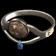 Triad Tiara (Sacred) Defense: (1565-2058) Durability: 20 Required Dexterity: 392 Required Level: 100 +(61 to 80)% Bonus to Poison Skill Duration 25% Faster Hit Recovery (11 to 15)% Bonus to Strength (11 to 15)% Bonus to Energy +(201 to 250)% Enhanced Defense +(41 to 50) Life when Struck by an Enemy Reduces all Vendor Prices 5% Socketed: 4 |
Tetrad Chain Gloves (Sacred) Defense: (1110-1417) Durability: 39 Required Strength: 308 Required Level: 100 +(21 to 25) Energy Factor to Spell Damage 30% Faster Hit Recovery +(201 to 250)% Enhanced Defense +(31 to 40) to Strength +(31 to 40) to Energy Total Character Defense Plus (31 to 40)% Requirements -40% Socketed: 4 |
Pentad Heavy Belt (Sacred) Defense: (2751-3454) Durability: 52 Required Strength: 454 Required Level: 100 +1 to Sorceress Skill Levels 40% Faster Run/Walk 20% Faster Hit Recovery -(11 to 15)% to Enemy Poison Resistance +(201 to 250)% Enhanced Defense Replenish Life +(31 to 50) +250 Maximum Stamina Requirements -20% Socketed: 2 |
| The Mysteries | ||
|---|---|---|
|
Sorceress Melee Set The Mysteries Witchblade Cauldron Pentacle Sacred Circle Charge of the Goddess Full Set Bonus: With 2 or more set items: +2 to Sorceress Skill Levels With 3 or more set items: Damage Reduced by 10% With 4 or more set items: +21 to Spiral Dance With Complete Set: +350 damage 15% Chance of Crushing Blow +17 to Moon Queen +4 to Sacred Armor +1000 Defense 5% Chance to Avoid Damage |
 Witchblade Warp Blade (Sacred) One-Hand Damage: (588-636) to (1085-1169) Durability: 44 (Sorceress Only) Required Dexterity: 331 Required Level: 100 Area Effect Attack 1% Chance to cast level 25 Hymn on Attack +(301 to 350)% Enhanced damage 25% Increased Attack Speed Adds 200-400 damage Stun Attack Replenish Life +1000 +(51 to 100) Life on Striking in Melee Socketed: 6 |
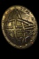 Cauldron Large Shield (Sacred) Defense: (3747-4896) Durability: 52 Required Strength: 384 Required Dexterity: 423 Required Level: 100 10% Chance to cast level 25 Spike Nova when Attacked +1 to Sorceress Skill Levels 35% Faster Block Rate 1% Increased Chance of Blocking (101 to 150)% Physical Damage Bonus to Miasma +(201 to 250)% Enhanced Defense Socketed: 4 Requirements -20% |
 Pentacle Gambeson (Sacred) Defense: (6384-7756) Durability: 44 (Sorceress Only) Required Dexterity: 486 Required Level: 100 +3 to Sorceress Skill Levels Adds 100-200 damage 10% Chance of Crushing Blow +(251 to 300)% Enhanced Defense +(31 to 50) to all Attributes Damage Reduced by 10% Total Character Defense Plus (21 to 25)% Socketed: 4 |
Sacred Circle Coronet (Sacred) Defense: (1523-1960) Durability: 15 Required Dexterity: 327 Required Level: 100 +2 to Sorceress Skill Levels 25% Faster Hit Recovery 25% Faster Block Rate +(251 to 300)% Enhanced Defense +(31 to 50) to all Attributes All Resists +(31 to 40)% Socketed: 4 |
Charge of the Goddess Chain Boots (Sacred) Defense: (1860-2296) Durability: 55 Required Strength: 316 Required Level: 100 2% Chance to cast level 15 Celerity on Attack +1 to Sorceress Skill Levels Adds 100-150 damage +(251 to 300)% Enhanced Defense Magic Damage Reduced by (11 to 15) Total Character Defense Plus (11 to 15)% Requirements -40% Socketed: 4 |
Uncategorized Sets
| Testament of the Apes | ||
|---|---|---|
|
Crossbow Set Testament of the Apes Apeshoot Apeskin Apeskull Apehand Apefoot Full Set Bonus: With 2 or more set items: 150% Bonus to Attack Rating With 3 or more set items: 5% Chance of Crushing Blow +50 to Strength With 4 or more set items: Enhanced Weapon Damage +200% +75 to Strength With Complete Set: 5% Chance to cast level 3 Thunder Slam when you Kill an Enemy 10% Chance to cast level 9 Tainted Blood when Struck by a Missile +5 to Silver Streak +3 to All Skills 25% Chance of Crushing Blow 25% to All Attributes Damage Reduced by 10% |
Apeshoot Repeating Crossbow (Sacred) Two-Hand Damage: (589-661 to 681-765) Required Strength: 282 Required Level: 100 25% Chance to cast level 9 Arrow on Striking 30% Attack Speed +(301 to 350)% Enhanced Damage 5% Reanimate as: Monkey King 5% Reanimate as: Shock Monkey +(151 to 200) Life after each Kill Requirements -25% |
Apeskin Leather Armor (Sacred) Defense: (6628-7803) Durability: 33 Required Strength: 356 Required Level: 100 20% Increased Attack Speed +(251 to 300)% Enhanced Defense 33% Chance of Open Wounds 30% Faster Run/Walk All Resists +(21 to 25)% Target Takes Additional Damage of (201 to 250) Requirements -25% |
|
Apeskull Bone Helm (Sacred) Defense: (2436-3008) Durability: 32 Required Strength: 423 Required Level: 100 +1 to All Skills Adds 201-250 Fire damage Adds 201-250 Lightning damage Adds 201-250 Cold damage -(21 to 25)% to Enemy Fire Resistance -(21 to 25)% to Enemy Cold Resistance -(21 to 25)% to Enemy Lightning Resistance -(21 to 25)% to Enemy Poison Resistance +(251 to 300)% Enhanced Defense Requirements -25% |
Apehand Leather Gloves (Sacred) Defense: (1014-1197) Durability: 25 Required Strength: 340 Required Level: 100 2% Chance to cast level 37 Powder Keg when you Kill an Enemy +(201 to 250)% Enhanced Defense +(101 to 150) to Life +(101 to 150) to Mana Fire Resist +(41 to 50)% Poison Resist +(41 to 50)% Damage Reduced by (41 to 50) Requirements -25% |
Apefoot Boots (Sacred) Defense: (1406-1683) Durability: 29 Required Strength: 343 Required Level: 100 2% Chance to cast level 37 Lightning Wall when you Kill an Enemy 30% Faster Hit Recovery +(201 to 250)% Enhanced Defense Cold Resist +(41 to 50)% Lightning Resist +(41 to 50)% Damage Reduced by 5% Requirements -25% |